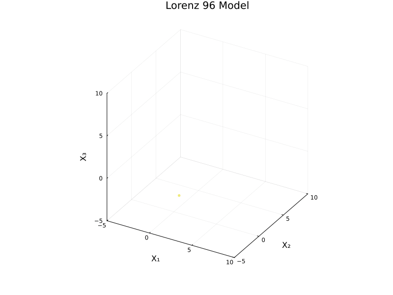

粒子法の概観
分子動力学法から SMC サンプラーまで
2024-04-07
Lorenz’ 96 とは (Lorenz, 1995) によって導入された大気モデルである．
A Blog Entry on Bayesian Computation by an Applied Mathematician
$$
$$
\[ \frac{d x_i}{d t}=\biggr(x_{i+1}-x_{i-2}\biggl)x_{i-1}-x_i+F \]
DynamicalSystems.jl でシミュレーションDynamicalSystems.jl (GitHub / Docs) パッケージのチュートリアルに Lorenz96 の例がある．
using DynamicalSystems
function lorenz96_rule!(du, u, p, t)
F = p[1]; N = length(u)
# 3 edge cases
du[1] = (u[2] - u[N - 1]) * u[N] - u[1] + F
du[2] = (u[3] - u[N]) * u[1] - u[2] + F
du[N] = (u[1] - u[N - 2]) * u[N - 1] - u[N] + F
# then the general case
for n in 3:(N - 1)
du[n] = (u[n + 1] - u[n - 2]) * u[n - 1] - u[n] + F
end
return nothing # always `return nothing` for in-place form!
end
N = 6
u0 = range(0.1, 1; length = N)
p0 = [8.0]
lorenz96 = CoupledODEs(lorenz96_rule!, u0, p0)
total_time = 12.5
sampling_time = 0.02
Y, t = trajectory(lorenz96, total_time; Ttr = 2.2, Δt = sampling_time)(6-dimensional StateSpaceSet{Float64} with 626 points, 2.2:0.02:14.7)最初の３成分を取り出して，３次元空間にプロットしてみる：1
